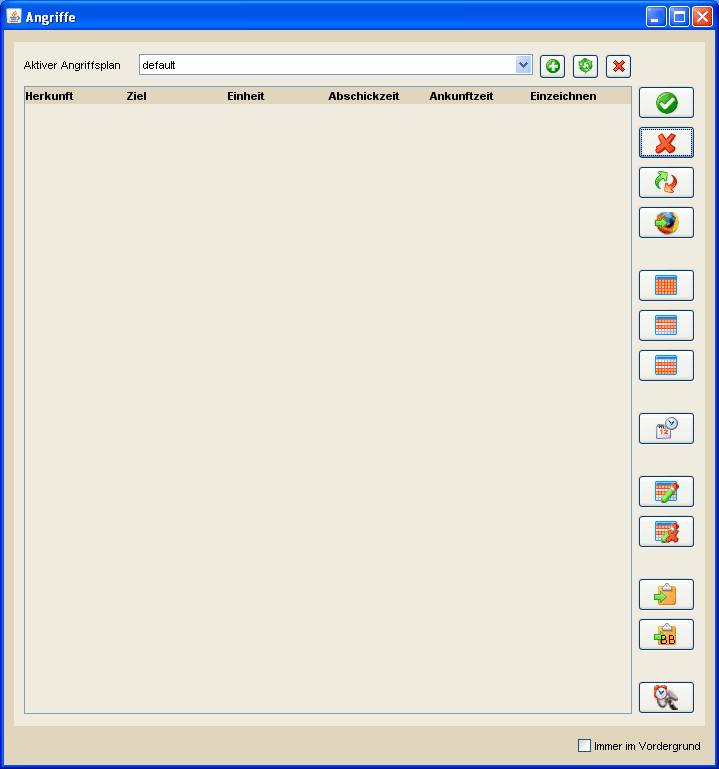

Angriffsübersicht |
|
|  | |
Die Angriffsübersicht dient der Verwaltung von und dem Umgang mit erstellten Angriffen. Sie ist somit mehr oder weniger der Dreh- und Angelpunkt von DS Workbench. Angriffe sind in DS Workbench in Angriffsplänen organisiert. Beim ersten Start existiert lediglich der Standardangriffsplan mit dem Namen 'default'. Dieser Plan besitzt einen besonderen Status und kann weder umbenannt noch gelöscht werden. Für alle selbst erstellten Pläne kann dies über die drei kleineren Buttons über der Tabelle, neben der Liste der Angriffspläne, durchgeführt werden. Für einzelne Angriffe besteht die Möglichkeit, die Art des Angriffs festzulegen. Dies wird dann durch ein entsprechendes Symbol in der letzten Spalte dargestellt. Hier gibt es die folgenden Möglichkeiten: AG |
|
| Alle Angriffe, deren Abschichzeit überschritten ist, werden ohne Rückfrage entfernt. | |
| Alle markierten Angriffe werden gelöscht. | |
| Kopieren der markierten Angriffe. | |
| Alle markierten Angriffe werden in einen anderen Angriffsplan verschoben. | |
| Zeiten für die ausgewählten Angriffe ändern. (mehr...) | |
| Alle Angriffe im gewählten Angriffsplan auswählen bzw. abwählen. | |
| Angriffe nach Spielern oder Dörfern gefiltert markieren. (mehr...) | |
| Die aktuelle Auswahl umkehren. | |
| Aktiviert die Einzeichnen Spalte für alle markierten Angriffe, wodurch diese auf der Hauptkarte dargestellt werden. | |
| Deaktiviert die Einzeichnen Spalte für alle markierten Angriffe. | |
| Markierte Angriffe werden unformatiert bzw. durch Tabs getrennt in die Zwischenablage kopiert. Anschließend können sie über den Shortcut Strg + V in Tabellenkalkulationen wie z.B. Excel oder OpenOffice Calc spaltenweise eingefügt werden. | |
| Markierte Angriffe werden als BB-Codes in die Zwischenablage kopiert und können in Stammesforen, IGMs und Notizen eingefügt werden. (mehr...) | |
| Markierte Angriffe werden als HTML Datei gespeichert. Diese Datei enthält neben allen Informationen zu den Angriffen Verlinkungen zum Gastzugang sowie zum Versammlungsplatz des Herkunftsdorfes eines Angriffs. Zusätzlich zeigt ein Counter live an, wieviel Zeit bis zum Abschicken des Angriffs noch bleibt. | |
| Die gewählten Angriffe des aktuellen Angriffsplans werden per IGM an alle Teilnehmer verschickt. (mehr...) | |
| Der gewählte Angriff wird in das Re-Time Werkzeug übertragen. Dies macht Sinn, wenn eingehende Angriffe aus dem SOS Analyzer in die Angriffsübersicht übertragen hat und nachträglich Re-Time Angriffe über das Re-Time Werkzeug berechnen möchte. | |
| Für den gewählten Angriff wird der Versammlungsplatz des Herkunftsdorfes im Standardbrowser des Systems geöffnet und die Koordinaten des Zieldorfes werden dort direkt eingetragen. Habt ihr das DS Workbench Userscript in eurem Browser installiert werden zusätzlich die Truppen, wie ihr sie für die Standardangriffe definiert habt, automatisch eingetragen. Angriffe können auf zwei verschiedene Arten übertragen werden. Zum einen könnt ihr sie einzeln übertragen indem ihr einen Angriff aufwählt und auf den Button mit dem nebenstehenden Symbol klickt. Ein neuer Browser-Tab wird geöffnet und die Koordinaten und Truppen (wenn das Userscript installiert ist) werden eingetragen. Weiterhin wird der Angriff in der Spalte "Übertragen" abgehakt und die Auswahl springt zum nächsten Angriff in der Tabelle. Dabei wird empfohlen, dass das Feld "Immer im Vordergrund halten" in der rechten unteren Ecke der Angriffsübersicht gewählt ist, damit das Browserfenster selbst im Hintergrund bleibt. Ist euch das zu mühsam habt ihr die Möglichkeit per Linksklick auf den Button mit der Bezeichnung "Klick-Konto", welchen ihr in der rechten oberen Ecke der Angriffsübersicht findet, Klicks zu speichern und die für das gleichzeitige Übertragen mehrerer Angriffe zu verwenden. Habt ihr eine ausreichende Anzahl Klicks gesammelt könnt ihr mehrere Angriffe markieren und den "Übertragen"-Button betätigen, woraufhin soviele Angriffe übertragen werden wie ihr Klicks gesammelt habt oder soviele Klicks abgezogen werden wie ihr Angriffe übertragen habt. Sind beispielsweise 20 Klicks gespeichert und übertragt ihr 10 Angriffe, so wird das Klick-Konto auf 10 reduziert und es öffnen sich in eurem Browser 10 neue Tabs mit eingetragenen Angriffen. |
|
| Exportiert für die ausgewählten Angriffe ein Userscript, welches ihr in euren Browser (Opera oder Firefox) einfügen könnt. Dieses Script dient dazu, direkt im Spiel die geplanten Angriffe darzustellen. Mehr Informationen dazu findet ihr hier. | |
 |
Festlegung der Truppen (Standardangriffe) die bei der Übertragung des Angriffs in den Browser für die einzelnen Angriffstype verwendet werden. Für die Auswahl wird ein separater Dialog geöffnet, in dem die Truppenanteile festgelegt werden können. |
| Aktiviert die Benachrichtigung bei anstehenden Angriffen. Ist diese Option aktiviert wird im Hintergrund überprüft, ob Angriffe in den nächsten 10 Minuten abgeschickt werden müssen. Ist dies der Fall, erscheint ein Hinweis für eine einstellbare Dauer und man kann darüber direkt in die Angriffsübersicht wechseln. Die Angriffsbenachrichtigung prüft dabei alle Angriffe in allen Angriffspläne und bezieht sich nicht auf die aktuelle Markierung. | |
| Zur besseren Übersicht werden die Abschickzeitpunkt farbig markiert, sofern sie 10 Minuten und weniger in der Zukunft liegen. Angriffe die in den nächsten 10 Minuten abgeschickt werden müssen sind Grün gekennzeichnet. Sind es weniger als 5 Minuten bis zum Abschickzeitpunkt färbt sich der Angriff Gelb. Beträgt die verbleibende Zeit weniger als 3 Minuten wird der Angriff Orange gefärbt, bei weniger als einer Minute Rot. Die Farben werden alle 10 Sekunden aktualisiert. Ist die notwendige Abschickzeit überschritten, ist der Eintrag in der Spalte Abschickzeit durchgestrichen. Ist der Angriff planmäßig angekommen wird der Eintrag des Ankunftzeitpunktes ebenfalls durchgestrichen. | |
| Die Tabelle kann, wie alle Tabellen in DS Workbench, spaltenweise sortiert werden. Klickt dafür einfach auf den Spaltenkopf der Spalte, nach der ihr sortieren wollt. Exportfunktionen werden dann in der aktuellen Sortierung, wie etwa aufsteigend nach der Abschickzeit, vorgenommen. | |